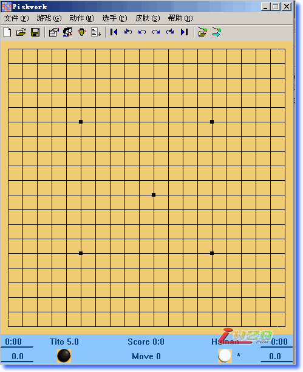

PISKVORK 8.2 (花园五子棋的原界面程序)
#1 PISKVORK 8.2 (花园五子棋的原界面程序) 作者：有志青年 发表时间：2008-2-5 16:38:53
这个版本是我(iamyuguo)自己编译的，版本比这里下载到的"花园五子棋"要高出不少了——但做的事情是一样的，主要不同大概就是多出了巡回比赛的结果显示、能够自定义工具栏什么的，然后我也像花园五子棋那样给他加上了绘制棋盘的功能 ，换掉了几个资源，然后自己汉化了一下。
，换掉了几个资源，然后自己汉化了一下。
做得太微不足道了所以连about对话框上都没敢留名，希望大家喜欢（毕竟昨天我是熬了夜的！）
附上的引擎中pbrain-Tito很值得称道，每步时间限制调到 60 s 时他就有相当于 Domini 的水平了……而且知道必输的时候他会乱下棋，非常可爱。这个tito是去年的冠军，pbrain-Tito应该比F6强的不是一点点！！

花园五子棋相关说明见本站：ShowPost.asp?ThreadID=1504
点击下载
 PISKVORK.rar
PISKVORK.rar#2 Re:PISKVORK 8.2 (花园五子棋的原界面程序) 作者：我爱棋 发表时间：2008-2-5 18:00:10
下载来看看
#3 Re:PISKVORK 8.2 (花园五子棋的原界面程序) 作者：SONY 发表时间：2008-2-11 20:09:51
楼主辛苦了而且你说的Tito我试过蛮厉害的啊！
#4 Re:PISKVORK 8.2 (花园五子棋的原界面程序) 作者：chenyu 发表时间：2008-3-16 23:56:08
这个棋盘怎么可以设计小一点就好了.Tito想那么久才Domini的水平，说明ＦＩＶＥ６比Ｔito厉害嘛．#5 Re:PISKVORK 8.2 (花园五子棋的原界面程序) 作者：极地剑客 发表时间：2008-5-5 23:47:59
选项设置里面第一排就是设置棋盘大小的~你可以自己修改~看汉化版本的~估计你应该没问题~#6 Re:PISKVORK 8.2 (花园五子棋的原界面程序) 作者：三把火 发表时间：2008-5-12 23:49:17
下载了，用一用！
谢谢分享！
#7 Re:PISKVORK 8.2 (花园五子棋的原界面程序) 作者：xr__ 发表时间：2008-5-13 0:34:59
现在都8。3了#8 Re:PISKVORK 8.2 (花园五子棋的原界面程序) 作者：心上人 发表时间：2010-1-19 13:08:53
楼主的知识好丰富啊